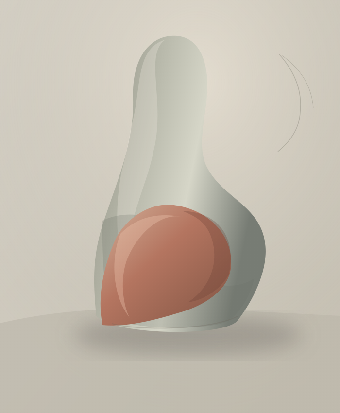

Atelier d'artiste · Sculptures & dessins
L'art du geste, du trait et de la matière.
Un espace pour découvrir des formes, des matières et des dessins.
Une invitation à regarder autrement

Études de formes · Composition graphiquePortfolio
Les œuvres à découvrir
L'atelier se prépare
Les œuvres arrivent bientôt.
Les sculptures et les dessins seront présentés ici, au fil des créations.
Démarche
« À travers la sculpture et le dessin, ce portfolio rassemble des œuvres, des recherches et des explorations plastiques. »En savoir plus sur l'artiste ↗
01 / La matière
02 / La ligne
Entrons en contact